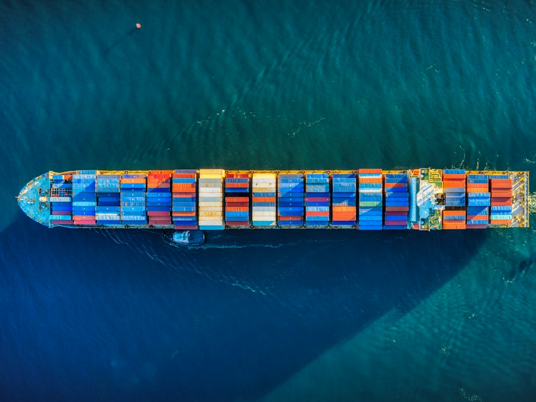
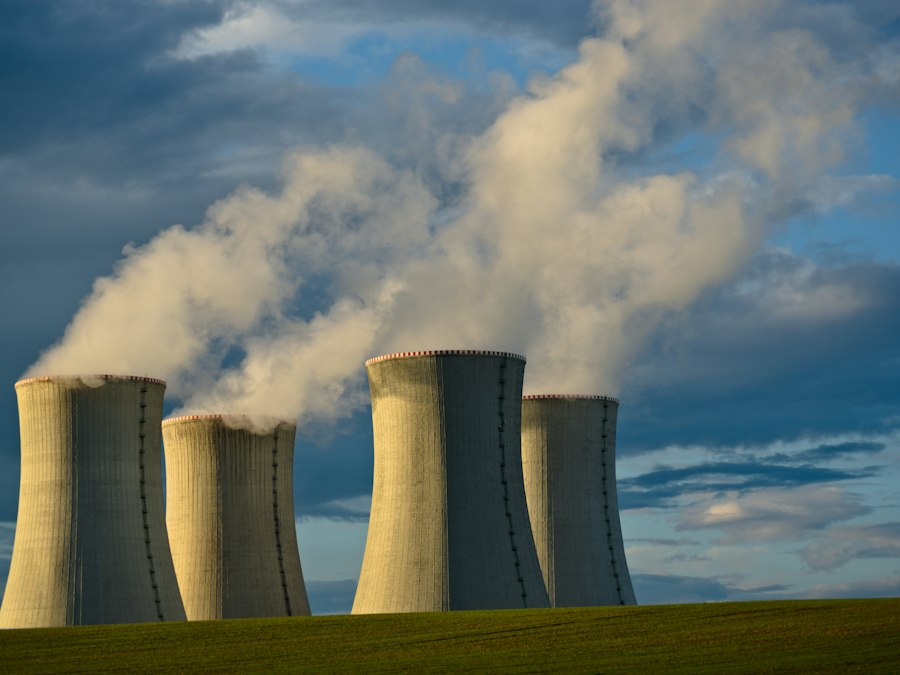
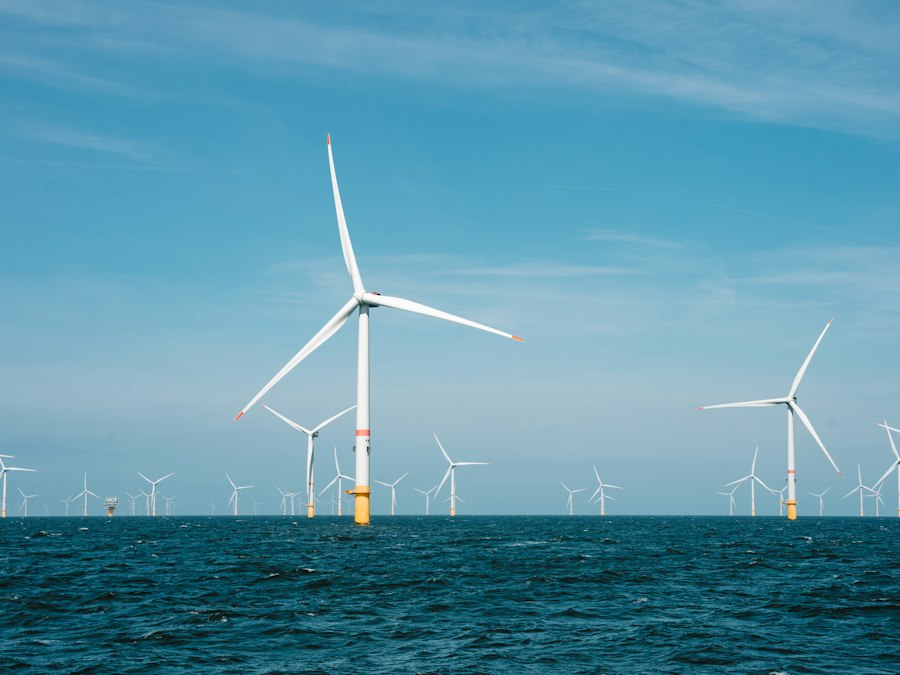

Independent equity research
Equity research on marine, energy and sustainability companies.
One or two in-depth reports a month, each ending with a rating and a 12-month price target.
Earlier reports
See all reportsEthan Jin
I'm an undergraduate at NYU's Stern School of Business, studying Finance, Sustainable Business and Environmental Studies. I started Pelagic Research to write about the companies I find most interesting: the ones that depend on the ocean, on energy markets and on climate policy. "Pelagic" means relating to the open sea.
On the finance side, I've interned in corporate development at Geode Health (backed by KKR), in investment banking at Logan Growth Advisors, and as an investment analyst at Heron Peak Capital, a lower-middle-market search fund. I also wrote for Elphinstone Research Group's U.S. Energy team. In the Wharton Global High School Investment Competition, my team and I placed as global finalists (top 10 of 1,600+ teams).
Before finance, you could find me in a lab or on a beach. I've done biological and environmental research at the Scripps Institution of Oceanography, UW Friday Harbor Labs and Penn Vet. At Scripps and UW, my theses focused on how climate change and warming ocean temperatures affect the behavior of marine invertebrates. At Penn, I studied the epigenetic regulation of meiosis in mice. I try to bring the same habits from research to each report: start from primary sources and dive in with an open mind.
Outside of school I dive, hike, swim and lift, I've gone dog mushing, and I keep a long list of restaurants ranked on Beli. My favorite trips so far have been to Iceland, New Zealand and Norway.
Sectors covered

Marine
Shipping, ports, offshore services, shipbuilding and aquaculture.
Tankers and dry bulk · Containers · Offshore · Aquaculture
See marine reports
Energy
Oil and gas, LNG, utilities and power infrastructure.
LNG · Upstream · Midstream · Utilities
See energy reports
Sustainability
Offshore wind, solar, alternative fuels and carbon capture.
Offshore wind · Green fuels · Storage · Carbon
See sustainability reportsHow a report gets made
Read the methodologyPick a company
Look for stocks where the price seems wrong, or where something about the business is about to change.
Research
Read the annual reports and filings, collect industry data, and talk to people who work in the industry where possible.
Model
Build a financial model with a bull, base and bear case.
Write it up
Publish the report with a rating, a price target and the main risks, plus a PDF version.
Get in touch
Questions about a report, an idea for a company to cover, or want to talk about shipping, energy or markets? Email me or reach out on LinkedIn.